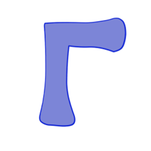

Есть теория, согласно которой в том случае, если кто-то точно выяснит,
для чего и зачем появилась Вселенная, она тут же исчезнет, и ее заменит
нечто другое, еще более бессмысленное и необъяснимое.
Есть другая теория, согласно которой это уже произошло.
Глава 27
адеюсь, вы приятно поужинали? — спросил Зарнивуп, когда Зафод и Триллиан рематериализовались на мостике звездного корабля Золотое Сердце. Зафод открыл глаза и сердито посмотрел на него. — Ты! — проговорил он. Он, шатаясь, поднялся на ноги, и отправился на поиски кресла, в которое мог бы свалиться. Он нашел кресло и свалился в него. — Я задал компьютеру невероятностные координаты цели нашего путешествия, — сказал Зарнивуп, — и мы очень скоро прибудем туда. А пока — почему бы вам не отдохнуть и приготовиться к встрече? Зафод ничего не сказал. Он снова поднялся, и направился к бару, из которого вытащил бутылку дженкс-спирта. Не меньше полбутылки излилось в его левое горло. — А когда ты получишь то, что тебе нужно, — заскрежетал зубами Зафод, — ты наконец, отвяжешься от меня? И я смогу заняться своими делами, и полежать на пляже, и все такое? — Это зависит от исхода встречи, — ответил Зарнивуп. — Зафод, кто этот человек? — слабым голосом спросила Триллиан, пытаясь подняться на ноги. — Что он делает на нашем корабле? — Это очень глупый человек, — сказал Зафод, — которому очень хочется встретиться с тем, кто правит Вселенной. — А, — сказала Триллиан, прикладываясь к бутылке, которую отняла у Зафода, — карьерист…
Глава 28
 лавная проблема — вернее, одна из главных проблем, поскольку их несколько — одна из многих главных проблем с управлением людьми состоит в том, кого ты ставишь ими управлять; или, точнее, кому удается убедить людей позволить управлять ими. Короче: всем известно, что те, кто больше всего хотят управлять людьми, именно по этой причине меньше всего годны для этого. Еще короче: любой, кто может убедить людей выбрать его Президентом, не должен ни под каким предлогом допускаться к этой работе. Совсем коротко: с людьми всегда проблемы. И вот что получается в конце концов: всей череде Галактических Президентов доставляло такое большое удовольствие держать бразды правления, что они очень редко замечали, что на самом деле ничего они не держат. А где-то в тени за их спинами — кто? Кто может управлять, если никого, кто хочет управлять, нельзя и близко подпускать к управлению?